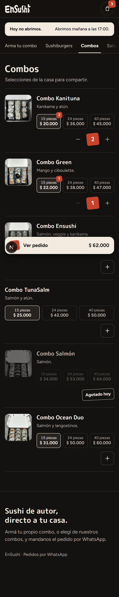

Para cada una tenés lo que hay hoy y la alternativa del brief. La opción A de la primera es una captura real del menú nuevo; lo demás son bocetos con el mismo estilo.
Aparece abajo cuando hay algo en el pedido y abre el carrito. Hoy sigue con el estilo viejo (pastilla salmón), que choca con el bermellón de los sellos. ¿La cambio ahora junto con el menú o espera a la Fase 7, con el carrito?
El menú nuevo con la pastilla salmón vieja: dos rojos distintos en la misma pantalla hasta que se rehaga el carrito.

La placa crema del brief: el sello bermellón con la cantidad, "Ver pedido" y el total. Es solo el estilo; la barra hace lo mismo. Toca un archivo más (FloatingCartBar).
Combo Kanituna
Kanikama y atún.
Combo Green
Mango y ciboulette.
Hoy, si un producto se marca como no disponible en el menú, desaparece de la lista. El brief proponía que quede en su lugar, desteñido. Para eso hay que tocar src/data/menu.ts (la función que arma la lista), así que no lo hice sin preguntarte.
El cliente no ve el producto. Es más simple, pero alguien que siempre pide ese combo puede pensar que lo sacaron de la carta.
Combo Ensushi
Salmón, veggie y kanikama.
Combo Ocean Duo
Salmón y langostinos.
Foto y tamaños apagados, sin "+", con un sello hueco "Agotado hoy". El cliente sabe que existe y que hoy no hay. Sirve también para cuando la app del local marque agotados en vivo.
Combo Ensushi
Salmón, veggie y kanikama.
Combo Salmón
Salmón.
Combo Ocean Duo
Salmón y langostinos.
Los productos que no van ese día de la semana (availableDays) seguirían sin mostrarse: esto es solo para los marcados como no disponibles.